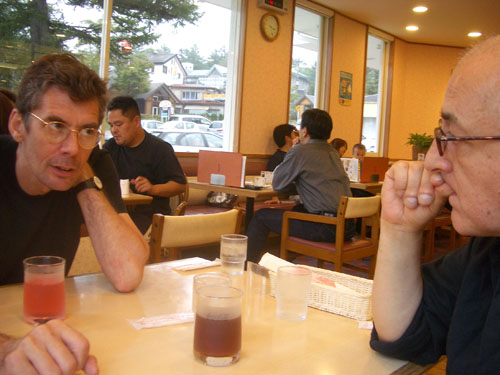
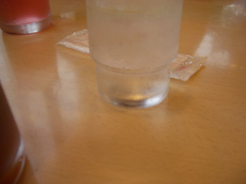
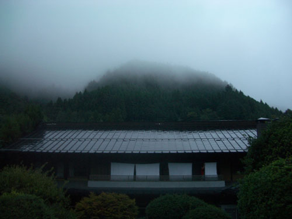
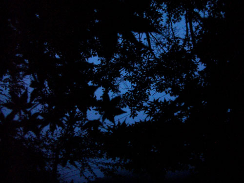
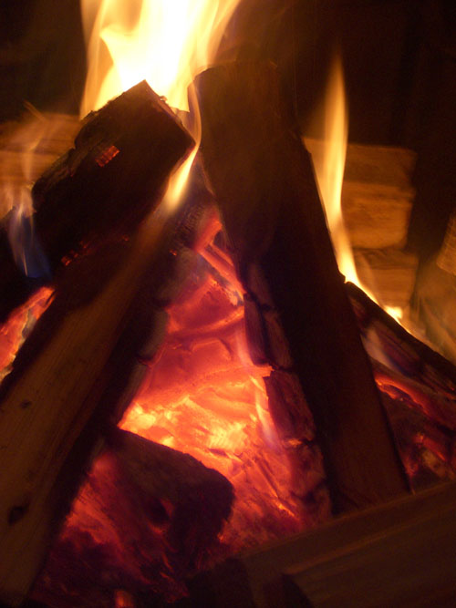
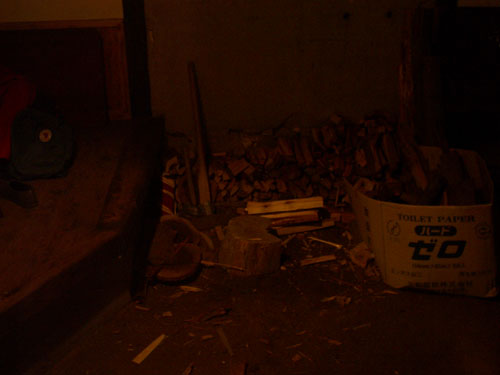

| < | > |
| Mt. Fuji | [2004-10-19 00:32] |
| "Well, if I'm going to see Mt Fuji, today's the day". Years ago I'd seen it from the top of the Comme des Garcons office. Hanging out the window to see the white topped blue cone almost blocked by the building across the road. But try as I might to will the sky to clear it just carried on drifting by in its own undifferentiated sombre way. Somehow, without much of a plan, we set off in Mrs. Ota's car to see what we could see of Mt. Fuji. We stopped almost as soon as we had started when we passed a local fair. There wasn't anything of note except a gang of harmless looking Hell's Angels, and a little bird call key ring which I didn't buy because I'm all grown up now. In the car park Yuichi seemed a little sad, like he was wondering what to do with us. It's so much easier to travel than to be visited. We, of course, really didn't mind what we did. Happy just to drift wherever our wise host would ferry us. So, back into the car, and listening to random selections from Yuichi's collection of old jazz tapes recycled from his dad, we drove along the misty lake shore vaguely thinking of where to eat. After realizing that all the good restaurants would be closed – it was already mid afternoon – we settled for Jonathan's, a fast food place right at the foot of the invisible Fuji.  Maybe you can see that we hadn't washed for a couple of days. The farmhouse didn't have a bathroom. There was an onsen-style bath house for the campsite guests close by, but the problem was that we could only use it when it wasn't booked. Tonight, at 9:30, we were promised an appointment with warm water. Until then we would have to muddle through as best we could. I suppose the completely pointless nature of this photograph expresses well the strangely disconnected mood of the day. There was a huge symmetrical volcano in front of me but I just couldn't see it.  By the time we had stopped off for ice cream it was almost dark when we left off Mrs. Ota's car.  Walking up to the farmhouse, we stopped to have a look at a more mundane cabin that Yuichi will probably move into when the snow arrives. As he and João discussed decor, I leaned against one of those small leaved maples that are typical of the delicateness one can find everywhere in Japan, and imagined what it would be like to live here all year.  Today was my turn to light the fire. I know it's another fire shot, but that's how it is with us humans and burning wood – it's the ancestral home of the quiet spaced out mind. To light it with just one match was the rule of the house.  While Yuichi went off to buy cigarettes, we sneaked down to the bath house and soaked among concrete and boulders. Careful not to leave any trace of our ablutions. We got out just in time before the next booking arrived. We were quite jolly now to be back home, washed and drinking beer. Roasting cockles and mushrooms on the roaring flame. Yuichi gave João a sushi demo in the kitchen while I fed wood to the fire. I couldn't resist the opportunity to show off how well I could cut wood when Yuichi laughing pointed out how much I was burning. "I did the same when I first arrived, until I realized how hard it is to keep up." I thought of those scenes in the cowboy movies were the tall lonesome stranger passes by, stays the night, and is out early the next morning splitting logs. It's man's work. Check your distance, swing the axe high above your head. Let it hang there for an instant. Then let it fall with all your might, certain that somehow your instinct will aim it just right. It's exhilarating when it works, and the waiting log flies in two. One tip my teacher taught me was to split the log from the bottom – from the top it just doesn't work.  |
|